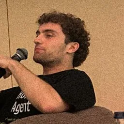
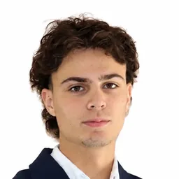
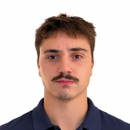
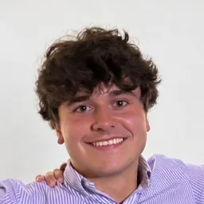
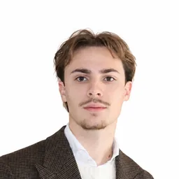
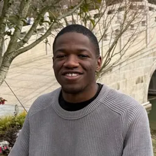
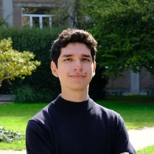
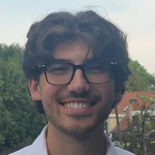
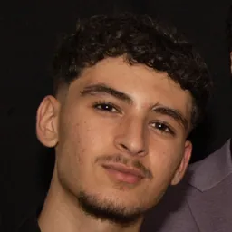
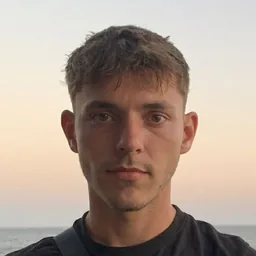

Équipe
L’équipe
Le projet est mené par des étudiants de l’École polytechnique de Bruxelles, avec le soutien de membres du personnel académique de l’ULB.
Étudiants
Responsables
Enzo Lottin
Ingénieur système et chef d’équipe
Bureau
Gabriel Fallik
Responsable OBC
BureauEdouard Desmedt
Responsable ADCS
Bureau
Pablo Napolitano
Responsable structure et thermique
Bureau
Jules Haut
Responsable EPS

Jean Van Beneden
Responsable TT&C
Membres de l’équipe

Matteo Napolitano
Ingénierie système

Harry Fotso
Ingénierie logicielle des opérations du satellite

Marco Paniura
Ingénierie ADCS

Joe Dahdah
ADCS – capteur stellaire

Ayman Salah
Ingénierie structure et thermique

Gael Derbaise
Ingénierie TT&C
Bureau
Envie de contribuer ?
L’équipe est complète pour 2026–2027. Les candidatures sont closes pour cette année académique.
Soutien académique
Des membres de services de recherche de l’ULB qui soutiennent le projet.
- Prof. Axel Coussement
- ATM
- Prof. Thierry Magin
- ATM
- Prof. François Quitin
- BEAMS
- Cédric Boey
- BAPP